Изготовление печатных плат электронных устройств
Практически в любом электронном устройстве используется одна или несколько печатных плат, на которые производится монтаж деталей. Ниже описываются несколько простых способов изготовления печатных плат вручную. Эти способы могут применяться в поштучном или мелкосерийном производстве электронных устройств, а также при их ремонте. Для изготовления печатной платы потребуется ее чертеж (размещение деталей, отверстия, печатные проводники). Чертежи можно использовать опубликованные или разработать самостоятельно - либо вручную, используя бумагу с нанесенной на нее координатной сеткой, либо на компьютере с использованием, например, программы AutoCAD или специализированных программ для разработки электронных устройств (OrCAD, Accel EDA, Sprint-Layout и т. п.). При работе необходимо помнить - чертеж какой стороны печатной платы и в каком изображении (прямом или зеркальном) используется. Описанными способами можно изготавливать однослойные печатные платы из одностороннего или двухстороннего фольгированного стеклотекстолита (или гетинакса). Способы изготовления продемонстрированы на примере печатной платы зарядного устройства [3]. Электрическая принципиальная схема платы и ее чертеж со стороны установки деталей (размеры 40 х 60 мм2) приведены на рисунке.
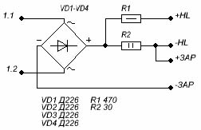
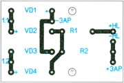
Способ 1. Вырезание токопроводящих дорожек резаком вручную
Этим способом можно оперативно делать печатные платы простых устройств, с невысокой точностью, невысокого качества по уровню дизайна. В частности, посредством его удобно делать несложные платы под поверхностный монтаж ВЧ-устройств [1] из двухстороннего фольгированного стеклотекстолита, используя одну из сторон в качестве сплошного заземления. Для прорезания медной фольги можно сделать резак из ножовочного полотна, обмотанный для удобства изолентой.
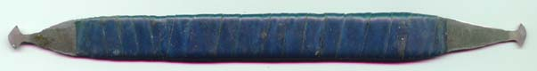
1. Из фольгированного стеклотекстолита вырезается заготовка платы в соответствии с габаритными размерами.
2. Изготавливается шаблон печатной платы для сверления отверстий. Для этого изображение печатной платы в масштабе 1 : 1 переносится на плотную бумагу толщиной 0.2 мм (можно тонкую бумагу наклеить на картон). Отверстия пробиваются насквозь керном. Шаблон можно использовать многократно.
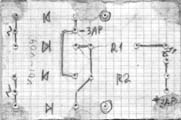
3. Шаблон печатной платы наклеивается на заготовку со стороны медной фольги (если фольгированный стеклотекстолит односторонний). Необходимо учитывать - чертеж какой стороны печатной платы и в каком изображении (прямом или зеркальном) использовался для изготовления шаблона и приклеивать шаблон к заготовке соответствующей стороной. По намеченным в шаблоне отверстиям сверлятся отверстия в заготовке сверлом минимального диаметра (обычно не более 1 мм).
4. Шаблон снимается с заготовки. Отверстия в заготовке рассверливаются до требуемого диаметра.
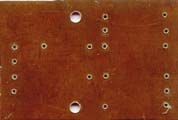
5. Линии изолирующих надрезов наносятся карандашом.
6. С помощью резака делаются прорези в медной фольге до стеклотекстолита.
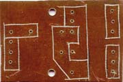
7. Излишки фольги удаляются.
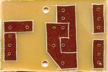
8. Заготовка зачищается со стороны медной фольги наждачной бумагой.
9. Плата покрывается флюсом (спиртовой раствор канифоли), затем производится залуживание контактных площадок. Остатки флюса удаляются с помощью растворителя (спирта), но можно их и не удалять. Канифоль в дальнейшем будет играть роль защитного покрытия.
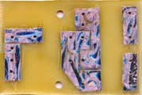
10. В соответствии с монтажной схемой производится распайка деталей на плату.
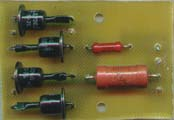
Способ 2. Вытравливание токопроводящих дорожек по нанесенному вручную защитному рисунку
Этот способ позволяет сравнительно быстро делать печатные платы простых и сложных устройств, с достаточно высокой точностью, среднего качества по уровню дизайна. Для нанесения защитного рисунка можно использовать медицинский шприц со сточенной под прямым углом иглой.
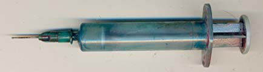
1. Из фольгированного стеклотекстолита вырезается заготовка платы в соответствии с габаритными размерами.
2. Изготавливается шаблон печатной платы для сверления отверстий. Изображение печатной платы в масштабе 1 : 1 переносится на плотную бумагу толщиной 0.2 мм (можно тонкую бумагу наклеить на картон). Отверстия пробиваются насквозь керном. Шаблон можно использовать многократно.
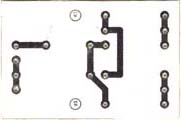
3. Шаблон печатной платы наклеивается на заготовку со стороны медной фольги (если фольгированный стеклотекстолит односторонний). Необходимо учитывать - чертеж какой стороны печатной платы и в каком изображении (прямом или зеркальном) использовался для изготовления шаблона и приклеивать шаблон к заготовке соответствующей стороной. По намеченным в шаблоне отверстиям сверлятся отверстия в заготовке сверлом минимального диаметра (обычно не более 1 мм).
4. Шаблон снимается с заготовки. Отверстия в заготовке рассверливаются до требуемого диаметра.
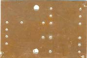
5. Заготовка зачищается со стороны медной фольги наждачной бумагой, протирается спиртом или ацетоном. В процедурах очистки заготовки платы нежелательно использовать вату, так как от нее остается множество ворсинок.
6. Контуры (или срединные линии) токопроводящих дорожек (печатных проводников) наносятся карандашом. Затем на место будущих печатных проводников наносится защитный слой (нитрокраска, битумный лак). После высыхания контуры рисунка при желании можно подравнять скальпелем, чтобы повысить дизайнерские качества платы.
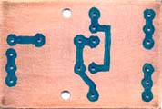
7. После высыхания защитного слоя производится травление платы в водном растворе хлорного железа (соотношение воды и хлорного железа по объему примерно 3 : 1). Для ускорения травления раствор можно подогреть до 40 ... 50 0C. Раствор при травлении необходимо периодически перемешивать (покачивая плату или сосуд, в котором производится травление). Если плата из двухстороннего фольгированного стеклотекстолита травится в горизонтальном положении, то ее необходимо периодически переворачивать.
8. По окончании процесса травления (когда места, не покрытые защитным слоем, полностью освобождаются от медного покрытия) плата промывается в воде. Защитный слой снимается растворителем (ацетоном). При необходимости можно подкорректировать результат, удалив непротравленные участки фольги скальпелем или ножом. Поверхность платы со стороны печатных проводников можно слегка прошлифовать мелкой наждачной бумагой.
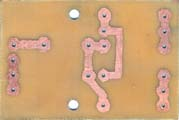
9. Плата покрывается флюсом (спиртовой раствор канифоли), затем производится залуживание печатных проводников. Остатки флюса удаляются с помощью растворителя (спирта), но можно их и не удалять. Канифоль в дальнейшем будет играть роль защитного покрытия.
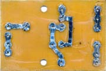
10. В соответствии с монтажной схемой производится распайка деталей на плату.
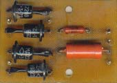
Способ 3. Вытравливание токопроводящих дорожек по защитному рисунку на основе позитивного фоторезистивного лака
Этот способ позволяет достаточно быстро делать печатные платы простых и сложных устройств, с высокой точностью, достаточно высокого качества по уровню дизайна. Он удобен для изготовления печатных плат под простой или сложный поверхностный монтаж. Для изготовления плат можно использовать готовый фоторезист Positiv 20 (фирма Kontakt Chemie, аэрозольная упаковка 100 мл). Фоторезист Positiv 20 лучше хранить при пониженной температуре (+5 0C). Срок сохраняемости при этом порядка 10 лет, возможно, больше.
1. Из фольгированного стеклотекстолита вырезается заготовка платы в соответствии с габаритными размерами.
2. Изготавливается шаблон печатной платы для сверления отверстий. Для этого изображение печатной платы в масштабе 1 : 1 переносится на плотную бумагу толщиной 0.2 мм (можно тонкую бумагу наклеить на картон). Отверстия пробиваются насквозь керном. Шаблон можно использовать многократно.
3. Шаблон печатной платы наклеивается на заготовку со стороны медной фольги (если фольгированный стеклотекстолит односторонний). Необходимо учитывать - чертеж какой стороны печатной платы и в каком изображении (прямом или зеркальном) использовался для изготовления шаблона и приклеивать шаблон к заготовке соответствующей стороной. По намеченным в шаблоне отверстиям сверлятся отверстия в заготовке сверлом минимального диаметра (обычно не более 1 мм). Процедуру сверления отверстий, в принципе, можно произвести и после вытравливания токопроводящих дорожек (печатных проводников). Но при этом следует учитывать, что края отверстий могут получиться неровными, придется дополнительно шлифовать плату. К тому же наличие готовых отверстий позволяет легко совмещать два фотошаблона для двухсторонней печатной платы.
4. Шаблон снимается с заготовки. Отверстия в заготовке рассверливаются до требуемого диаметра.
5. Заготовка зачищается со стороны медной фольги мелкой наждачной бумагой. Шлифование делается сначала продольными, затем поперечными и в конце круговыми движениями.
6. Заготовка промывается с помощью губки водой с моющим средством, желательно содержащим поверхностные активные вещества (ПАВ), и высушивается. После этого к поверхности фольги нельзя прикасаться руками, чтобы не оставить жировых загрязнений. В процедурах очистки заготовки платы нежелательно использовать вату, так как от нее остается множество ворсинок.
7. Фоторезист и заготовку платы желательно охладить до температуры ниже 20 0C. Фоторезист наносится на медную фольгу методом распыления. Некоторое время надо дать фоторезисту растечься по фольге. Желательно, чтобы слой фоторезиста был ровным, без подтеков. Далее производится сушка заготовки в темном месте при температуре 70 0C в течение 0.5 часа, при температуре 20 0C - 24 часа. После сушки фоторезист становится фоточувствительным, заготовку платы нельзя подолгу держать при солнечном освещении или под лампами дневного света.
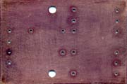
8. Изготавливается фотошаблон печатной платы в масштабе 1 : 1 вручную или с помощью струйного или лазерного принтера на прозрачной пленке (тип пленки должен соответствовать типу принтера), на кальке или на обычной бумаге. Так как фоторезист Positiv 20 является позитивным, то изображения печатных проводников делаются черным цветом. Для фотошаблона желательно сделать отдельный чертеж с отверстиями на печатных проводникам минимального диаметра (чтобы через них не происходило паразитного засвечивания). Печать производится наилучшего возможного качества в черно-белой цветовой гамме. Для односторонней печатной платы делается один фотошаблон, для двухсторонней - два. Фотошаблон надо будет в дальнейшем прикладывать к плате той стороной, на которой производилась печать, поэтому фотошаблон для нижней стороны платы печатается в прямом, а для верхней - в зеркальном изображении. При необходимости (если на просвет в изображениях печатных проводников видны непропечатанные светлые места) фотошаблон можно отретушировать. Фотошаблон, напечатанный на обычной бумаге, перед накладыванием на заготовку платы необходимо пропитать минеральным или растительным маслом. Фотошаблон можно использовать многократно.
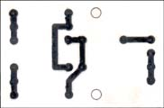
9. Фотошаблон стороной, на которой произведена печать, накладывается на фольгу таким образом, чтобы отверстия в фотошаблоне и заготовке совпадали, и плотно прижимается к поверхности фольги. Можно прижимать фотошаблон к заготовке с помощью тонкого прозрачного оргстекла, либо воспользоваться минеральным или растительным маслом. Если фотошаблон сделан на обычной бумаге, то перед накладыванием на заготовку платы надо его пропитать минеральным или растительным маслом. Засветка производится под источником ультрафиолетового света с длиной волны в диапазоне 340 ... 420 нм. Изготовитель фоторезиста Positiv 20 считает достаточным время засветки 1 ... 10 секунд под источником ультрафиолетового света. При использовании светильника на ультрафиолетовых светодиодах [2] оптимальное время засветки составляло примерно 5 минут. Вместо ультрафиолетовой лампы можно использовать компактные лампы дневного света суммарной мощностью примерно 100 ... 300 Вт, расположенные на расстоянии 10 ... 15 см от заготовки платы с фотошаблоном и обеспечивающие достаточно равномерную их освещенность. Время засветки при этом подбирается экспериментально и может составлять примерно полчаса.
10. Фотошаблон снимается с заготовки. Использованное масло можно убрать с помощью фильтровальной бумаги, или промыв плату с моющим средством в воде. Проявление производится в неиспользованном ранее 0.7 % растворе NaOH в воде (0.7 г NaOH на 100 г H2O) при комнатной температуре (20 0C) в течение примерно 1 ... 2 минут. Иногда для проявления рисунка печатных проводников и удаления засвеченного фоторезиста может потребоваться и гораздо больше времени - порядка получаса.
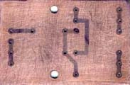
При необходимости можно откорректировать рисунок, удалив остатки фоторезиста там, где они не нужны, и подретушировав рисунок, например, битумным лаком или специальным маркером для печатных плат. Если качество проявленного защитного рисунка показалось неудовлетворительным, то можно смыть фоторезист спиртом или ацетоном и повторить обработку, начав с промывания заготовки платы в воде (п. 6).
11. Далее производится травление платы в водном растворе хлорного железа (соотношение воды и хлорного железа по объему примерно 3 : 1). Для ускорения травления раствор можно подогреть до 40 ... 50 0C. Раствор при травлении необходимо периодически перемешивать (покачивая плату или сосуд, в котором производится травление). Если плата из двухстороннего фольгированного стеклотекстолита травится в горизонтальном положении, то ее необходимо периодически переворачивать.
12. По окончании процесса травления (когда места, не покрытые защитным слоем, полностью освобождаются от медного покрытия) плата промывается в воде. Защитный слой снимается растворителем (спиртом или ацетоном). При необходимости можно подкорректировать результат, удалив непротравленные участки фольги скальпелем или ножом. Поверхность платы со стороны печатных проводников можно слегка прошлифовать мелкой наждачной бумагой.
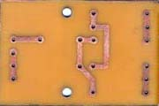
13. Плата покрывается флюсом (спиртовой раствор канифоли), затем производится залуживание печатных проводников. Остатки флюса удаляются с помощью растворителя (спирта), но можно их и не удалять. Канифоль в дальнейшем будет играть роль защитного покрытия.
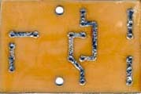
14. В соответствии с монтажной схемой производится распайка деталей на плату.
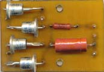
Способ 4. Вытравливание токопроводящих дорожек по защитному рисунку на основе негативной фоторезистивной пленки
Этот способ аналогично предыдущему позволяет быстро изготавливать с высокой точностью и высоким качеством печатные платы простых и сложных устройств, в том числе с поверхностным монтажом. Для изготовления плат используется специальная защитная трехслойная пленка, средний слой которой является фоторезистивным (негативным), а два наружных - защитными. Нижний защитный слой удаляется перед наклейкой пленки на печатную плату, а верхний - перед проявлением.
1. Из фольгированного стеклотекстолита вырезается заготовка платы в соответствии с габаритными размерами.
2. Изготавливается шаблон печатной платы для сверления отверстий. Для этого изображение печатной платы в масштабе 1 : 1 переносится на плотную бумагу толщиной 0.2 мм (можно тонкую бумагу наклеить на картон). Отверстия пробиваются насквозь керном. Шаблон можно использовать многократно.
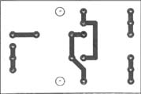
3. Шаблон печатной платы наклеивается на заготовку со стороны медной фольги (если фольгированный стеклотекстолит односторонний). Необходимо учитывать - чертеж какой стороны печатной платы и в каком изображении (прямом или зеркальном) использовался для изготовления шаблона и приклеивать шаблон к заготовке соответствующей стороной. По намеченным в шаблоне отверстиям сверлятся отверстия в заготовке сверлом минимального диаметра (обычно не более 1 мм).
4. Шаблон снимается с заготовки. Отверстия в заготовке рассверливаются до требуемого диаметра.
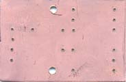
5. Заготовка зачищается со стороны медной фольги мелкой наждачной бумагой. Шлифование делается сначала продольными, затем поперечными и в конце круговыми движениями.
6. Заготовка промывается с помощью губки водой с моющим средством, желательно содержащим поверхностные активные вещества (ПАВ), и высушивается. После этого к поверхности фольги нельзя прикасаться руками, чтобы не оставить жировых загрязнений. В процедурах очистки заготовки платы нежелательно использовать вату, так как от нее остается множество ворсинок.
7. Вырезается кусок фоторезистивной пленки размером несколько большим, чем печатная плата. С фоторезистивной пленки снимается нижний защитный слой (с внутренней стороны рулона), пленка накладывается на печатную плату со стороны медной фольги и тщательно разглаживается. Чтобы обеспечить хорошее прилипание пленки к плате, необходимо прогреть ее горячим утюгом, нагретым несколько выше 100 0C, через несколько слоев газетной бумаги (примерно 6 ... 8 слоев) в течение примерно 30 секунд. Излишки пленки по краям платы можно не обрезать, тогда впоследствии будет проще снимать верхний защитный слой. Работать с пленкой можно при искусственном освещении (светодиодные лампы или лампы дневного света).
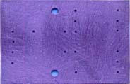
8. Изготавливается фотошаблон печатной платы в масштабе 1 : 1 вручную или с помощью струйного или лазерного принтера на прозрачной пленке (тип пленки должен соответствовать типу принтера), на кальке или на обычной бумаге. Так как фоторезистивная пленка является негативной, то фотошаблон также делается негативным. Для фотошаблона желательно сделать отдельный чертеж с отверстиями на печатных проводникам минимального диаметра. Печать производится наилучшего возможного качества в черно-белой цветовой гамме. На струйном принтере желательно один шаблон пропечатать три раза. Для односторонней печатной платы делается один фотошаблон, для двухсторонней - два. Фотошаблон надо будет в дальнейшем прикладывать к плате той стороной, на которой производилась печать, поэтому фотошаблон для нижней стороны платы печатается в прямом, а для верхней - в зеркальном изображении. При необходимости (если на просвет видны непропечатанные светлые места) фотошаблон можно отретушировать. Фотошаблон, напечатанный на обычной бумаге, перед накладыванием на заготовку платы необходимо пропитать минеральным или растительным маслом. Фотошаблон можно использовать многократно.
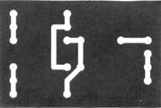
9. Фотошаблон стороной, на которой произведена печать, накладывается на фольгу таким образом, чтобы отверстия в фотошаблоне и заготовке (или специальные метки) совпадали, и плотно прижимается к поверхности фольги. Можно прижимать фотошаблон к заготовке с помощью тонкого прозрачного оргстекла, либо воспользоваться минеральным или растительным маслом. Если фотошаблон сделан на обычной бумаге, то перед накладыванием на заготовку платы надо его пропитать минеральным или растительным маслом. Засветка производится под источником ультрафиолетового света с длиной волны в диапазоне 340 ... 420 нм. При использовании светильника на ультрафиолетовых светодиодах [2] оптимальное время засветки составляло примерно 1 минуту.
10. Фотошаблон снимается с заготовки. Использованное масло можно убрать с помощью фильтровальной бумаги, или промыв плату с моющим средством в воде. С фоторезистивной пленки снимается верхний защитный слой. Проявление производится в 0.7 % растворе NaOH в воде (0.7 г NaOH на 100 г H2O) при комнатной температуре (20 0C) в течение примерно нескольких минут, хотя производитель рекомендует проявление в 0.5 ... 1 % растворе кальцинированной соды. При проявлении излишки фоторезистивной пленки удаляются с помощью мягкой кисточки. Проявочный раствор щелочи можно использовать несколько раз.
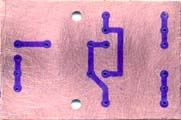
При необходимости можно откорректировать рисунок, удалив скальпелем остатки фоторезистивной пленки там, где они не нужны, и подретушировав рисунок, например, специальным маркером для печатных плат. Если качество проявленного защитного рисунка показалось неудовлетворительным, то можно смыть фоторезистивную пленку ацетоном и повторить обработку, начав с промывания заготовки платы в воде (п. 6).
11. Далее производится травление платы в водном растворе хлорного железа (соотношение воды и хлорного железа по объему примерно 3 : 1). Для ускорения травления раствор можно подогреть до 40 ... 50 0C. Раствор при травлении необходимо периодически перемешивать (покачивая плату или сосуд, в котором производится травление). Если плата из двухстороннего фольгированного стеклотекстолита травится в горизонтальном положении, то ее необходимо периодически переворачивать.
12. По окончании процесса травления (когда места, не покрытые защитным слоем, полностью освобождаются от медного покрытия) плата промывается в воде. Защитный слой снимается растворителем (ацетоном). При необходимости можно подкорректировать результат, удалив непротравленные участки фольги скальпелем или ножом. Поверхность платы со стороны печатных проводников можно слегка прошлифовать мелкой наждачной бумагой.
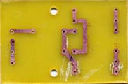
13. Плата покрывается флюсом (спиртовой раствор канифоли), затем производится залуживание печатных проводников. Остатки флюса удаляются с помощью растворителя (спирта), но можно их и не удалять. Канифоль в дальнейшем будет играть роль защитного покрытия.
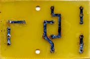
14. В соответствии с монтажной схемой производится распайка деталей на плату.
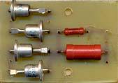
Ссылки:
16.12.2010
16.11.2023
Альтернативные источники
энергии
Компьютеры и
Интернет
Магнитные поля
Механотронные системы
Перспективные
разработки
Электроника и технология